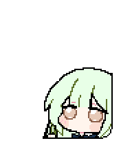

「好女孩」，大概吧。
保留梗图里那张不动声色的脸。
不画嘴巴，眼神和黄瓜就是台词。
她正在认真种瓜。你也可以先摸一会儿鱼。
点点动作，把这个面无表情的小家伙带回桌面。
小睦正在赶来

选一个动作，或开启注视模式和她对视。
若叶睦 · 好女孩像素款 / v1.0
支持 Codex、其他兼容 Agent 和 PetDex。
安装文件与启用分开，默认保留当前宠物。
保留梗图里那张不动声色的脸。
不画嘴巴，眼神和黄瓜就是台词。
抱瓜、种瓜、送瓜，还会接收退货。
九种动作，都有一点小心思。
台词引用、社区梗与二创文案分开说明。参考素材和制作代码，均可在仓库查看。
查看创作与来源角色来自 BanG Dream! 官方角色页。本桌宠为同人创作，以用户提供的「好女孩」梗图和 54×54 像素参考为视觉依据。参考页面发布者为 huolizi；原插画作者与首次发布出处尚未核实。
「祥 移动」「不会长久的」参考台词及社区引用；「太好了呢」为台词节选。「好女孩？」来自社区梗；「又退货？」「不许退货」「瓜在长了」是围绕黄瓜情节创作的二创文案。逐项来源记录
网站使用 v1.0 正式图集预览；客户端中的动作触发与停留节奏由客户端控制。十六向注视需要客户端支持 Sprite v2 的注视功能。